lbteint module¶
This module, lbteint.py contains the integral solvers
for the linearized Boltzmann Transport equations.
Contains the routines to perform the Boltzmann transport integrals.
-
lbteint.analytic_k_space_energy(kx, ky, kz, effmass, e_shift)¶ Returns the parabolic energy dispersion.
Parameters: transport : object
A Transport() object
kx : float
The 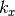 in cartesian coordinates.
ky : float
The 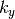 in cartesian coordinates.
kz : float
The 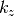 in cartesian coordinates.
effmass : ndarray
Dimension: (3)The effective mass along , and , respectively.
Returns: float
The energy value in eV.
Warning
This routine only accepts the diagonal
elements of the effective mass tensor
-
lbteint.analytic_k_space_integrand(kz, ky, kx, eta, beta, effmass, e0, i, l, m)¶ Returns the integrand for the anlytic reciprocal space integration of the transport tensor.
Parameters: kz : float
The in cartesian coordinates.
ky : float
The in cartesian coordinates.
kx : float
The in cartesian coordinates.
eta : float
The reduced chemical potential.
beta : float
The 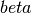 factor, 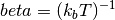 in eV.
effmass : float
The effective mass in units of the free electron mass.
e0 : float
The energy shift, e.g. 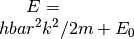, where 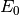 is the energy shift in eV.
i : int
The order of the transport tensor.
l : {0,1,2}
The first index of the transport tensor.
m : {0,1,2}
The second index of the transport tensor.
Returns: float
The integrand value.
-
lbteint.analytic_k_space_velocity(kx, ky, kz, effmass, i)¶ Returns the parabolic velocity dispersion.
Parameters: kx : float
The in cartesian coordinates.
ky : float
The in cartesian coordinates.
kz : float
The in cartesian coordinates.
effmass : ndarray
Dimension: (3)The effective mass along , and , respectively.
i : {0,1,2}
The direction to evaluate the velocity (0 is along etc.).
Returns: float
The velocity in eVAA.
Warning
This routine only accepts the diagonal
elements of the effective mass tensor. The
 factor is not
returned and need to be introduced
externally.
factor is not
returned and need to be introduced
externally.
-
lbteint.concatenate_integrand(energies, velocities, scatter, spin_fact, chempot, beta, order)¶ Concatenates the integrand in the Boltzmann transport integral.
-
lbteint.concatenate_integrand_band(energies, velocities, tau, spin_fact, chempot, beta, order)¶ Concatenates the integrand in the Boltzmann transport integral and sums the bands.
-
lbteint.fermiintclosed(order, eta, spin_fact)¶ Returns the value of the closed expressions for the Fermi integrals.
Parameters: order : integer
The Fermi integral order (two times
 to avoid half integers).
to avoid half integers).eta : float
The chemical potential given in reduced form (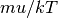, dimensionless).
spin_fact : int
The spin degeneracy. 1 for non-spin degeneracy and 2 for spin degeneracy.
Returns: float
The value of the Fermi integral.
Notes
Utilizes the GSL [1] library and a few inlined function from the literature. Consult Ref. [2] and Ref. [3] as a suplement. The Gamma factor renormalization which is included in the GSL returns should be removed and this is done in the interface Cython file.
Warning
in order to avoid half numbers, order should be given as two times the actual order of the integral.
References
[1] Gnu scientific library. http://www.gnu.org/software/gsl, 2016. [2] P. Van Halen and D. L. Pulfrey. Accurate, short series approximations to fermi–dirac integrals of order -1/2, 1/2, 1, 3/2, 2, 5/2, 3, and 7/2. Journal of Applied Physics, 57(12):5271–5274, jun 1985. doi:10.1063/1.335269. [3] P. Van Halen and D. L. Pulfrey. Erratum: “accurate, short series approximation to fermi–dirac integrals of order -1/2, 1/2, 1, 3/2, 2, 5/2, 3, and 7/2’’ [j. appl. phys. 57, 5271 (1985)]. Journal of Applied Physics, 59(6):2264–2265, mar 1986. doi:10.1063/1.337053.
-
lbteint.integrandpar(eps, transport, w0, eta, beta, energy_trans, effmass, i)¶ Returns the integrand used in the analytic energy integration of the transport coefficients in
integrate_e()Parameters: eps : float
The reduced carrier energy.
transport : object
A Transport() object.
w0 : ndarray
Dimension: (12)Contains the scattering rate prefactor for the different scattering mechanisms in units of inverse fs.
eta : float
The reduced chemical potential.
beta : float
The factor in eV.
energy_trans : ndarray
Dimension: (12)Contains the energy transitions (that is added to the energy in
 , typically,
, typically,
 , where
, where  is the size of the energy transition. Set it to zero
for the non-relevant scattering mechanisms.
is the size of the energy transition. Set it to zero
for the non-relevant scattering mechanisms.effmass : float
The effective mass in units of the electron mass.
i : int
The order of the transport integral to be evaluated.
Returns: float
The integrand value.
Notes
The total scattering is calculated based on the well known scattering models for parabolic energy dispersions 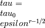, where
is the scattering factor.
-
lbteint.integrandpardos(eps, transport, w0, eta, beta, energy_trans, effmass, i)¶ The integrand for the density of states integral over energy.
Parameters: eps : float
The reduced carrier energy
transport : object
A Transport() object
w0 : ndarray
Dimension: (12)Contains the scattering rate prefactor for the different scattering mechanisms in units of inverse fs. Not used in this routine, but it needs the dummy from the call argument.
eta : float
The reduced chemical potential
beta : float
The factor in eV. Not used in this routine, but it needs the dummy from the call argument.
energy_trans : ndarray
Dimension: (12)Contains the energy transitions (that is added to the energy in
, typically,
, where
is the size of the energy transition. Set it to zero
for the non-relevant scattering mechanisms. Not
used in this routine, but it needs the dummy from the
call argument.effmass : float
The effective mass in units of the electron mass. Not used in this routine, but it needs the dummy from the call argument.
i : int
The order of the transport integral to be evaluated. Not used in this routine, but it needs the dummy from the call argument.
Returns: float
The integrand value for the density of states.
Notes
Calculates the density of states integrand
-
lbteint.integrandpart2(eps, transport, w0, eta, beta, energy_trans, effmass, i)¶ Returns the integrand used in the analytic energy integration of the transport distribution function with a quadratic 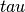 term
Parameters: eps : float
The reduced carrier energy.
transport : object
A Transport() object.
w0 : ndarray
Dimension: (12)Contains the scattering rate prefactor for the different scattering mechanisms in units of inverse fs.
eta : float
The reduced chemical potential.
beta : float
The factor in eV.
energy_trans : ndarray
Dimension: (12)Contains the energy transitions (that is added to the energy in
,
typically, ,
where is the size of the
energy transition. Set it to zero for the
non-relevant scattering mechanisms.effmass : float
The effective mass in units of the electron mass.
i : int
The order of the transport integral to be evaluated.
Returns: float
The integrand value.
Notes
The total scattering is calculated based on the well known scattering models for parabolic energy dispersions , where
is the scattering factor.
Difference from integrandpar(): here tau^2 is used in the integrand (for the calculation of the Hall factor).
-
lbteint.scipy_e_integrals(transport, integrand, e_min, e_max, w0, eta, beta, energy_trans, effmass, order, spin_fact, method='quad')¶ Calculates the one dimensional energy integrals.
Uses the SciPy function
scipy.integrate.quad().Parameters: transport : object
A Transport() object
integrand : {“normal”,”hall”,”dos”}
Selects the type of integrand to be used. “normal” selects
integrandpar(). “hall” selectsintegrandpart2(), “dos” selectsintegrandpardos().e_min : float
The lower integration limit in eV.
e_max : float
The higher integration limit in eV.
w0 : ndarray
Dimension: (12)Contains the scattering rate prefactor (inverse of relaxation time) for the different scattering mechanisms in units of inverse fs.
eta : float
The reduced chemical potential.
beta : float
The factor, 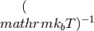 in eV.
effmass : ndarray
Dimension: (3)The effective mass along the three reciprocal unit vectors in units of the free electron mass.
e0 : float
The energy shift, e.g. , where is the energy shift in eV.
i : int
The order of the transport tensor.
l : {0,1,2}
The first index of the transport tensor.
m : {0,1,2}
The second index of the transport tensor.
spin_fact : int
The spin degeneracy factor. 1 for non-spin degeneracy, 2 for spin degeneracy.
method : {“quad”}, optional
The SciPy three dimensional integration method using
scipy.integrate.quad().Returns: float
The resulting integral over energy.
-
lbteint.scipy_k_integrals(eta, beta, effmass, e0, i, l, m, method='tplquad')¶ Calculates the three dimensional wave vector integrals.
Uses the SciPy function
scipy.integrate.tplquad().Parameters: eta : float
The reduced chemical potential
beta : float
The factor, in eV.
effmass : ndarray
Dimension: (3)The effective mass along the three reciprocal unit vectors in units of the free electron mass.
e0 : float
The energy shift, e.g. , where is the energy shift in eV.
i : int
The order of the transport tensor.
l : {0,1,2}
The first index of the transport tensor
m : {0,1,2}
The second index of the transport tensor
method : {“tplquad”}, optional
The SciPy three dimensional integration method using
scipy.integrate.tplquad().Returns: float
The resulting integral over the wave vectors.
See also
-
lbteint.scipy_k_integrals_discrete(tr, integrand_type, energies, velocities, scatter, chempot, beta, order, spin_fact, method='trapz')¶ Calculates the three dimensional integrals over the k-points for discrete data.
Uses SciPy integration functions for discrete data.
Parameters: tr : object
A Transport() object
energies: ndarray
Contains the band energies in eV for each k-point.
velocities: ndarray
Contains the derivative if energies without the \hbar factors for each k-point.
scatter:
Contains the relaxation time at each k-point.
chempot : float
The chemical potential in eV
beta : float
The factor, in eV.
spin_fact : int
The spin factor, 1 for non-spin degeneracy and 2 for spin degeneracy.
method : {“trapz”, “simps”, “romb”}, optional
The SciPy three dimensional integration method for the
scipy.integrate.trapz(),scipy.integrate.simps()and thescipy.integrate.romb()functions, respectively. Defaults to “trapz”.Returns: integral : float
The resulting integral over the wave vectors.
-
lbteint.scipy_k_integrals_discrete2(tr, energies, velocities, scatter, chempot, beta, spin_fact, order, method='trapz')¶ Calculates the three dimensional integrals over the k-points for discrete data.
Uses integration functions for discrete data.
Parameters: tr : object
A Transport() object
chempot : float
The chemical potential in eV
beta : float
The factor, in eV.
spin_fact : int
The spin factor, 1 for non-spin degeneracy and 2 for spin degeneracy.
kx, ky, kz : float, float, float
The spacing in inverse AA between the points along each direction.
order : float
The order of the energy minus chemical potential term in the denominator.
method : {“trapz”, “simps”, “romb”}, optional
The SciPy three dimensional integration method for the
scipy.integrate.trapz(),scipy.integrate.simps()and thescipy.integrate.romb()functions, respectively. Defaults to “trapz”.